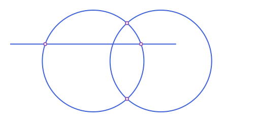

Cookbook: Circles
Working with circles
The circle through three points
using Apollonius
c = APCircle2(APPoint(0.0, 0.0), APPoint(6.0, 0.0), APPoint(1.5, 4.0))
c.center, c.r([3.0, 1.15625], 3.2151071618998954)
A circle from its diameter, or from a center and a point on it
A, B = APPoint(0.0, 0.0), APPoint(6.0, 0.0)
by_diameter = circle_with_diameter(A, B) # or circle_with_diameter(APSegment(A, B))
by_point = APCircle2(A, APPoint(3.0, 4.0)) # center A, through the second point
by_diameter.r, by_point.r(3.0, 5.0)
Where a line or two circles meet
c1, c2 = APCircle2(APPoint(0.0, 0.0), 3.0), APCircle2(APPoint(4.0, 0.0), 3.0)
l = APLine(APPoint(-4.0, 1.0), APPoint(4.0, 1.0))
intersection(c1, c2), intersection(l, c1)(APPoint{2, Float64}[[2.0, 2.23606797749979], [2.0, -2.23606797749979]], APPoint{2, Float64}[[-2.8284271247461903, 1.0], [2.8284271247461903, 1.0]])
An empty result means no intersection; see Intersections for tangency and every other pair of shapes intersection accepts.
The tangent lines from a point to a circle
c = APCircle2(APPoint(0.0, 0.0), 3.0)
p = APPoint(7.0, 0.0)
tangent_points(c, p), tangent_length(c, p)(APPoint{2, Float64}[[1.2857142857142856, 2.710523708715754], [1.2857142857142856, -2.710523708715754]], 6.324555320336759)
The common tangents of two circles
c1, c2 = APCircle2(APPoint(0.0, 0.0), 3.0), APCircle2(APPoint(10.0, 0.0), 1.5)
length(external_tangent_lines(c1, c2)), length(internal_tangent_lines(c1, c2))(2, 2)
The radical axis of two circles
c1, c2 = APCircle2(APPoint(0.0, 0.0), 3.0), APCircle2(APPoint(4.0, 0.0), 2.0)
radical_axis(c1, c2)APLine([2.625, 0.0] -> [2.625, 4.0])
The line through the two points where the circles cross, when they do.
A circle orthogonal to another, with a given center
c = APCircle2(APPoint(0.0, 0.0), 3.0)
o = orthogonal_circle(c, APPoint(7.0, 0.0))
o.center, angle_measure_intersection(c, o) ≈ pi / 2([7.0, 0.0], true)
The power of a point
power_of_point(APPoint(7.0, 0.0), APCircle2(APPoint(0.0, 0.0), 3.0))40.0
Negative inside the circle, zero on it, and the square of the tangent length outside.
Invert a circle or a line
c = APCircle2(APPoint(3.0, 0.0), 1.0)
invert(c, APPoint(0.0, 0.0); k=2.0)APCircle2([1.5, 0.0], 0.5)
See Circles: Inversion for inverting lines, segments and polygons too.
Two classical results
The lune of Hippocrates
The two crescents cut from the semicircles on the legs of a right isosceles triangle have together the area of the triangle:
A, B, C = APPoint(0.0, 0.0), APPoint(2.0, 0.0), APPoint(1.0, 1.0)
half(p, q) = area(circle_with_diameter(p, q)) / 2 # a semicircle on [p, q]
lunes = half(A, C) + half(C, B) - (half(A, B) - area(APTriangle(A, B, C)))
lunes ≈ area(APTriangle(A, B, C))true
The Apollonius circle of two points
The points whose distances to A and B are in a fixed ratio lie on a circle:
A, B = APPoint(0.0, 0.0), APPoint(6.0, 0.0)
c = apollonius_circle(A, B, 2.0)
p = point_on(c, 1.2)
distance(p, A) / distance(p, B) ≈ 2.0true